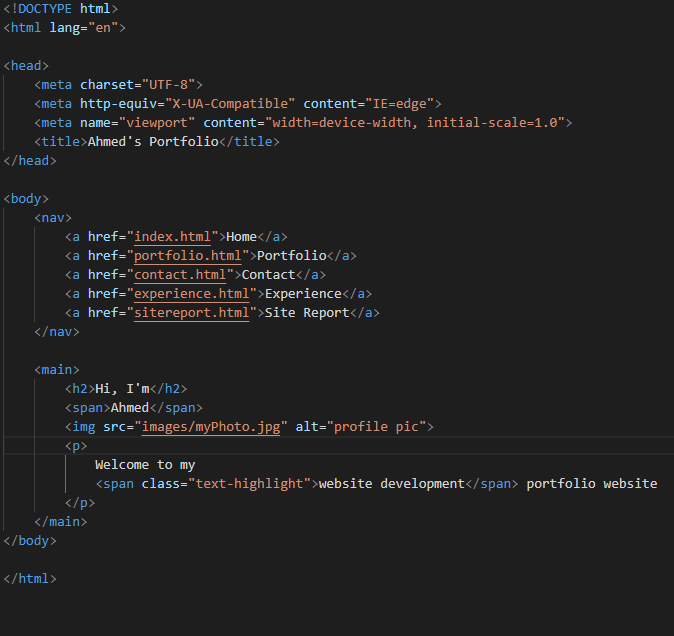
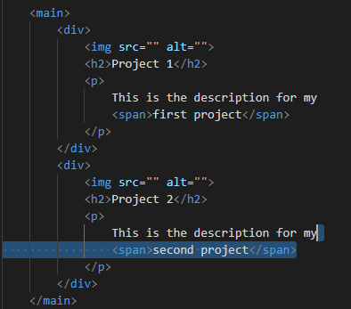
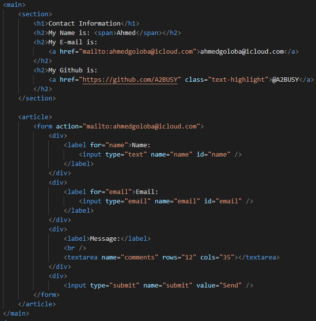
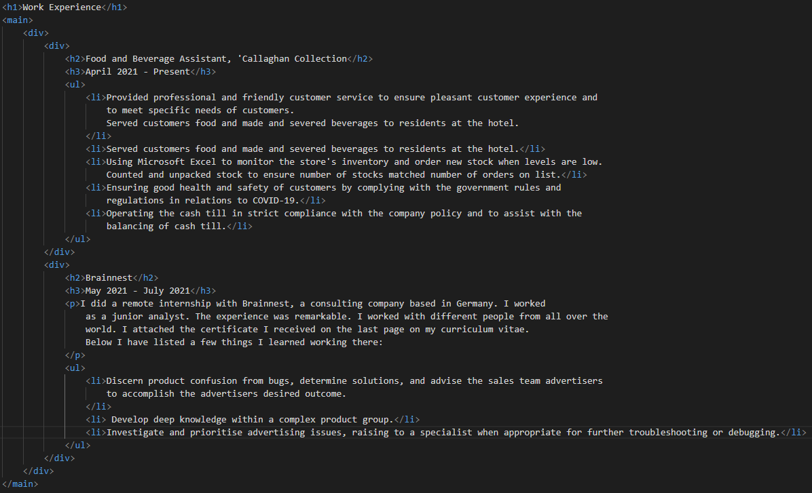
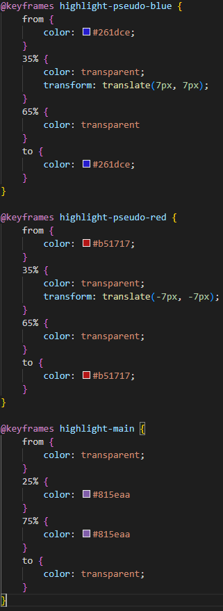
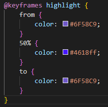

Site Report
Design Decisions
Where Design influences came from
I explored colour palettes on coolors.co and found the current colour scheme there. I was going for a dark neon theme, I implemented this by creating the 'text-highlight' class. I found the 'Red Hat Mono' font by looking through google fonts and seeing which one I liked the most.Creating the Index Name Animation
First, I used a fading transition from a lighter purple, to a darker purple. This is still used in this page, under the class "text-highlight". Then I decided to use a 3D glitch effect, having inspiration from here. To create a similar effect, I decided to use a ::before and ::after pseudoelement. I created animations to move them slightly towards the original word, so it will have a cool seperating effect.Creating the Navigation Bar
My first step was to create the HTML for the bar. Originally the hamburger menu was a link, however this would not work when i clicked it. I did some research and decided to use a checkbox, as it would work the same. Then I used the :focus selector to check if it was selected, and change the navbar display from none to flex. This means it would show when the checkbox was clicked. To style it like a hamburger menu, I used a pseudoelement and gave it content "≡".Development Log
12/03/23
I created a base index.html and set up my personal access token for authentication. I also added a navbar and main section to the index.html.
15/03/23
I created a base portfolio.html, it followed the same layout as index.html with the navbar being at the top and then the main content following. I've decided that every webpage will follow this structure and only the main content will be different.
16/03/23
I created the contact page.
17/03/23
I created the base for the work experience page.
19/03/23
I created the base for the site report page. I also decided to add a h1 element to each webpage to give it a more visual title.

22/03/23
I used an html validator to validate my code. I then fixed every error that was found in the html.
I also styled the navabr and decided to start thinking about responsivity. I did this by adding an import statement that would only run on large screen sizes.
23/03/23
I made a new branch called index-styles. In this branch I styled the homepage and created an animation.
24/03/23
I created a new branch called contact-styles. I then created an animation for highlighted text.
I then styled the contact info and form sections. After completing this I merged the branch with master. I then created a new branch called portfolio-styles and then styled the portfolio page.
25/03/23
I created a branch called experience-styles and styled the work experience page. After completing this I merged the branch with master. I then went on to create a branch called sitereport-styles and styled the siterport page.
I then created a new branch called responsive styles, here I worked on the responsitivity of the website on smaller screens. After completing the styles, I then validated all the css files using this css validator and fixed all errors.